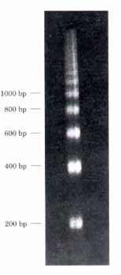

The DNA molecules in chromosomes are the largest macromolecules in cells. Many smaller DNAs also occur in cells, in the form of viral DNAs, plasmids, and (in eukaryotes) mitochondrial or chloroplast DNAs. Many DNAs, especially those in bacteria, mitochondria, and chloroplasts, are circular. Viral and chromosomal DNAs have one major feature in common: they are generally much longer than the viral particles or cells in which they are packaged. The total DNA content of a eukaryotic cell is much greater than that of a bacterial cell.
Genes are segments of a chromosome that contain the information for a functional polypeptide or RNA molecule. In addition to these structural genes, chromosomes contain a variety of regulatory sequences involved in replication, transcription, and other processes. In eukaryotic chromosomes, there are two important special-function repetitive DNA sequences: centromeres, which are attachment points for the mitotic spindle, and telomeres, which occur at the ends of the linear chromosomes. Many genes in eukaryotic cells, and occasionally in bacteria, are interrupted by noncoding sequences called introns. The coding segments separated by introns are called exons.
Most cellular DNAs are supercoiled. Supercoiling is a manifestation of structural strain imparted by the underwinding of the DNA molecule. Underwinding is a decrease in the total number of helical turns in the DNA relative to the relaxed or B form. To maintain an underwound state, DNA must be a closed circle or be bound with protein. Supercoils resulting from underwinding are defined as negative supercoils. Underwinding is quantified by a topological parameter called linking number, Lk. The linking number of a relaxed, closed-circular DNA is used as a reference (Lk0) and is equal to the number of base pairs divided by 10.5. Underwinding is measured in terms of the specific linking dif ference or s, which equals (Lk - Lk0)/Lko. For cellular DNAs, s typically equals -0.05 to -0.07, which means that approximately 5 to 7?0 of the helical turns in the DNA have been removed. DNA underwinding facilitates strand separation for processes such as transcription or replication. The plectonemic supercoils in negatively supercoiled DNA in solution are right-handed, and the overall structure is narrow and extended. An alternative form called solenoidal supercoiling provides a much greater degree of compaction, and this form predominates in the cell.
DNAs that differ only in their linking number are called topoisomers. The enzymes that underwind and/or relax DNA are called topoisomerases, and they act by catalyzing changes in linking number. There are two classes, type 1 and type 2, which change Lk in increments of 1 or 2, respectively. In a bacterial cell, the superhelical density of the DNA represents a regulated balance between the activities of topoisomerases that increase and decrease linking number.
In the chromatin of eukaryotic cells, the fundamental unit of organization is the nucleosome, which consists of DNA and a protein particle containing eight histones, two copies each of histones H2A, H2B, H3, and H4. The segment of DNA (about 146 base pairs) wrapped around the protein core is in the form of a left-handed solenoidal supercoil. Nucleosomes are organized into 30 nm fibers, and the fibers themselves are extensively folded to provide the 10,000-fold compaction required to fit a typical eukaryotic chromosome into a cell nucleus. The higher-order folding involves attachment to a nuclear scaffold that contains large amounts of histone Hl and topoisomerase II. Bacterial chromosomes are also extensively compacted into a structure called a nucleoid, but the chromosome appears to be much more dynamic and irregular in structure than eukaryotic chromatin, reflecting the shorter cell cycle and very active metabolism of a bacterial cell.
Alberts, B., Bray, D., Lewis, J., Raff, M., Roberts, K., & Watson, J.D. (1989) Molecular Biology of the Cell, 2nd edn, Garland Publishing, Inc., New York.
An excellent general reference.
Kornberg, A. & Baker, T.A. (1991) DNA Replication, 2nd edn, W.H. Freeman and Company, New York.
A good place to start for further information on the structure and function of DNA.
Singer, M. & Berg, P. (1991) Genes and Genomes: A Changing Perspectiue, University Science Books, Mill Valley, CA.
An up-to-date discussion of genes, chromosome structure, and many other topics.
Genes and Chromosomes
Blackburn, E.H. (1990) Telomeres: structure and synthesis. J. Biol. Chem. 265, 5919-5921.
Jelinek, W.R. & Schmid, C.W. (1982) Repetitive sequences in eukaryotic DNA and their expression. Annu. Reu. Biochem. 51, 813-844.
Murray, A.W. & Szostak, J.W. (1987) Artificial chromosomes. Sci. Am. 257 (November), 62-68.
Novick, R.P. (1980) Plasmids. Sci. Am. 243 (December), 102-127.
Sharp, P.A. (1985) On the origin of RNA splicing and introns. Cell 42, 397-400.
Ullu, E. & Tschudi, C. (1984) Alu sequences are processed 7SL RNA genes. Nature 312, 171-172.
Supercoilzng and Topoisomerases
Bauer, W.R., Crick, F.H.C., & White, J.H. (1980) Supercoiled DNA. Sci. Am. 243 (July), 118-133.
Boles, T.C., White, J.H., & Cozzarelli, N.R. (1990) Structure of plectonemically supercoiled DNA. J. Mol. Biol. 213, 931-951.
A study that defines seueral fundamental features of supercoiled DNA.
Cozzarelli, N.R., Boles, T.C., & White, J.H. (1990) Primer on the topology and geometry of DNA supercoiling. In DNA Topology and Its Biological Ef fects (Cozzarelli, N.R. & Wang, J.C., eds), pp. 139184, Cold Spring Harbor Laboratory Press, Cold Spring Harbor, NY.
This prouides a more aduanced and thorough discussion.
Lebowitz, J. (1990) Through the looking glass: the discovery of supercoiled DNA. Trends Biochem. Sci. 15, 202-207.
A short and interesting historical note.
Liu, L.F. (1989) DNA topoisomerase poisons as antitumor drugs. Annu. Reu. Biochem. 58, 351375.
A reuiew of eukaryotic topoisomerases and the use of topoisomerase inhibitors in cancer chemotherapy.
Wang, J.C. (1985) DNA topoisomerases. Annu. Reu. Biochem. 54, 665-697.
Wang, J.C. (1991) DNA topoisomerases: Why so many? J. Biol. Chem. 266, 6659-6662.
A good short summary of topoisomerase functions.
Chromatin and Nucleosomes
Filipski, J., Leblanc, J., Youdale, T., Sikorska, M., & Walker, P.R. (1990) Periodicity of DNA folding in higher order chromatin structures. EMBO J. 9, 1319-1327.
Kornberg, R.D. (1974) Chromatin structure: a repeating unit of histones and DNA. Scsence 184, 868-871.
The classic paper that introduced the subunit model for chromatin.
Richmond, T.J., Finch, J.T., Rushton, B., Rhodes, D., & Klug, A. (1984) Structure of the nucleosome core particle at 7t~ resolution. Nature 311, 532-537.
van Holde, K.E. (1989) Chromatin, SpringerVerlag, New York.
l. How Long Is the Ribonuclease Gene? What is the minimum number of nucleotide pairs in the gene for pancreatic ribonuclease (124 amino acids long)? Suggest a reason why the number of nucleotide pairs in the gene might be much larger than your answer.
2. Pachaging of DNA in a Virus The DNA of bacteriophage T2 has a molecular weight of 120 x 106. The head of the T2 phage is about 210 nm long. Assuming the molecular weight of a nucleotide pair is 650, calculate the length of T2 DNA and compare it with the length of the T2 head. Your answer will show the necessity of very compact packaging of DNA in viruses (see Fig. 23-1).
3. The DNA of Phage M13 Bacteriophage M13 DNA has the following base composition: A, 23%; T, 36%; G, 21%; C, 20%. What does this information tell us about the DNA of this phage?
4. Base Composition of ΦX174 DNA Bacteriophage ΦX174 DNA occurs in two forms, singlestranded in the isolated virion and doublestranded during viral replication in the host cell. Would you expect them to have the same base composition? Give your reasons.
5. Size of Eukaryotic Genes An enzyme present in rat liver has a polypeptide chain of 192 amino acid residues. It is coded for by a gene having 1,440 base pairs. Explain the relationship between the number of amino acid residues in this enzyme and the number of nucleotide pairs in its gene.
6. DNA Supercoiling A covalently closed circular DNA molecule has an Lk of 500 when it is relaxed. Approximately how many base pairs are in this DNA? How will the linking number be altered (increase, decrease, no change, become undefined) if (a) a protein complex is bound to form a nucleosome, (b) one DNA strand is broken, (c) DNA gyrase is added with ATP, or (d) the double helix is denatured (base pairs are separated) by heat?
|
7. DNA Structure Explain how the underwinding of a B-DNA helix might facilitate or stabilize the formation of Z-DNA. 8. Chromatin One of the important early pieces of evidence that helped define the structure of the nucleosome is illustrated by the agarose gel shown below, in which the thick bands represent DNA. It was generated by treating chromatin briefly with an enzyme that degrades DNA, then removing all protein and subjecting the purified DNA to electrophoresis. Numbers at the side of the gel denote the position to which a linear DNA of the indicated size (in base pairs) would migrate. What does this gel tell you about chromatin structure? Why are the DNA bands thick and spread out rather than sharp? |
 |